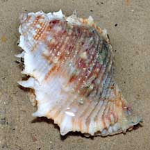
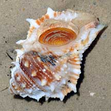
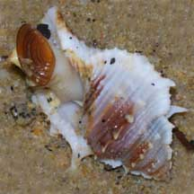
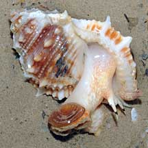
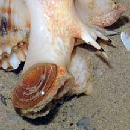

|
|
| shelled snails text index | photo index |
| Phylum Mollusca > Class Gastropoda |
| Frog
snail Bufonaria sp. Family Bursidae updated Oct 2019 Where seen? Although the shells are often seen (usually occupied by hermit crabs), living snails are rarely seen. Usually at the lowest tides near seagrass meadows on our Northern and Eastern shores. Apparently, the name is due to the warty texture of the shell. Features: 4-6cm. Shell thick, conical with spirals of many regular bumps and blunt spines. There is a short tubular tip on the shell for the siphon. Ooperculum thin and flexible, made of a horn-like material. Body pale, with a long muscular foot, short tentacles with a black band at the tips. The Common frog snail (Bufonaria rana) is about 7.5cm long, up to 9cm and found on mud or muddy-sand bottoms. What does it eat? Some species appear appear to feed on tube worms. These have an extendible proboscis and large salivary glands, that are probably used to anaesthetize the worms in their tubes; the worms are then sucked out and swallowed whole. |
 East Coast, Nov 08 |
 |
 |
 |
 Muscular foot with operculum. |
| Frog snails on Singapore shores |
On wildsingapore
flickr
|
| Other sightings on Singapore shores |
| Family
Bursidae recorded for Singapore from Tan Siong Kiat and Henrietta P. M. Woo, 2010 Preliminary Checklist of The Molluscs of Singapore.
|
Links
References
|